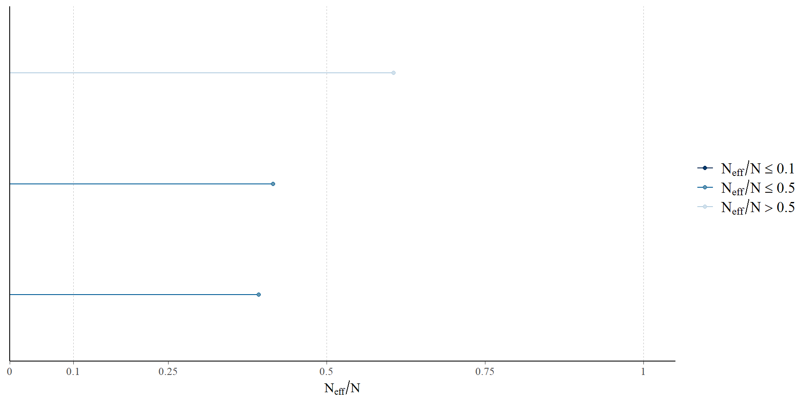
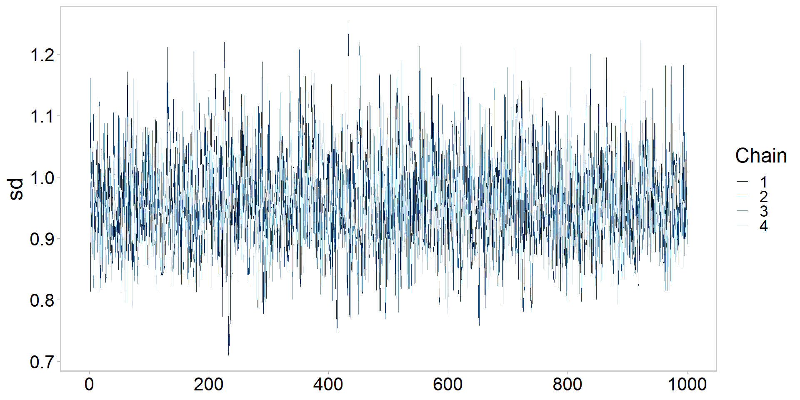
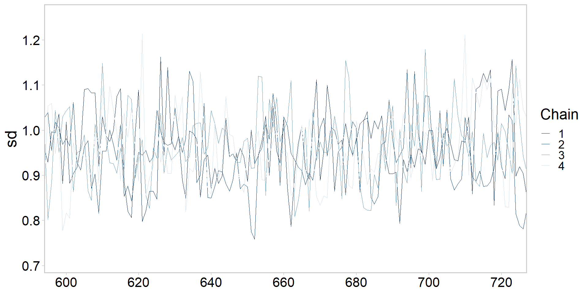
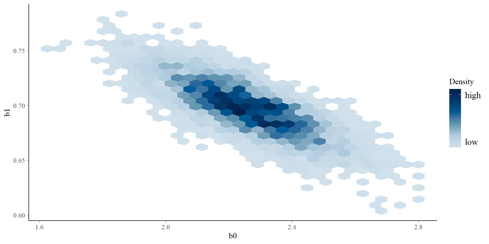
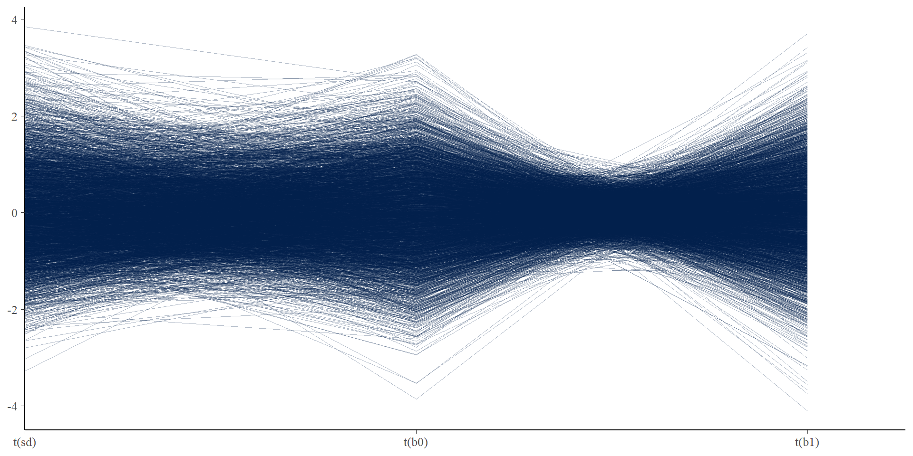
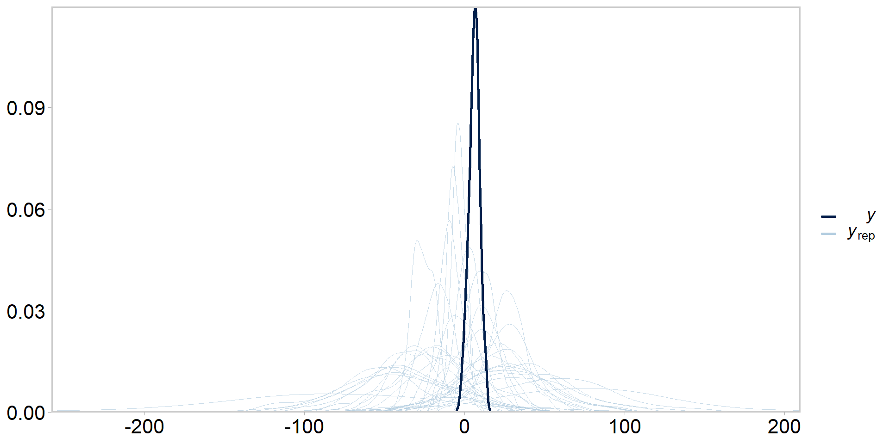

An introduction to Stan for applied Bayesian inference
FW 891
6 September 2023
Purpose
- Learn the basic syntax of the Stan language
- Write code to elicit simple models and implement Bayesian inference in Stan
- Use the cmdstanr interface
- Develop familiarity with a few packages that make your life easier
- Walk through some model diagnostics
- Make sure you have these programs/packages installed


Installing CmdStanR
- See the installation instructions here
see also CmdStan user’s guide
Now let’s make sure it works
Do the bottom numbers match up?
Running MCMC with 4 parallel chains...
Chain 1 Iteration: 1 / 2000 [ 0%] (Warmup)
Chain 1 Iteration: 1001 / 2000 [ 50%] (Sampling)
Chain 1 Iteration: 2000 / 2000 [100%] (Sampling)
Chain 2 Iteration: 1 / 2000 [ 0%] (Warmup)
Chain 2 Iteration: 1001 / 2000 [ 50%] (Sampling)
Chain 2 Iteration: 2000 / 2000 [100%] (Sampling)
Chain 3 Iteration: 1 / 2000 [ 0%] (Warmup)
Chain 3 Iteration: 1001 / 2000 [ 50%] (Sampling)
Chain 3 Iteration: 2000 / 2000 [100%] (Sampling)
Chain 4 Iteration: 1 / 2000 [ 0%] (Warmup)
Chain 4 Iteration: 1001 / 2000 [ 50%] (Sampling)
Chain 4 Iteration: 2000 / 2000 [100%] (Sampling)
Chain 1 finished in 0.1 seconds.
Chain 2 finished in 0.1 seconds.
Chain 3 finished in 0.1 seconds.
Chain 4 finished in 0.1 seconds.
All 4 chains finished successfully.
Mean chain execution time: 0.1 seconds.
Total execution time: 0.6 seconds.# A tibble: 2 × 10
variable mean median sd mad q5 q95 rhat ess_bulk ess_tail
<chr> <num> <num> <num> <num> <num> <num> <num> <num> <num>
1 lp__ -7.26 -6.99 0.719 0.329 -8.73 -6.75 1.00 1658. 1861.
2 theta 0.246 0.231 0.118 0.118 0.0811 0.463 1.00 1378. 1236.Presumably this broke someone
Onward!
Stan: the basics
Stan is a probablistic modeling language https://mc-stan.org/
Freely available
Implements HMC, and an algorithm called NUTS
- No U-Turn Sampler
- We are using it for full Bayesian inference, but it can do other things too (we will not talk about these things)
The Stan documentation and community is legendary in my opinion, albeit dense at times
Using Stan requires writing a .stan file
Coding in Stan is something of a cross between R, WINBUGS/JAGS, and C++
It is a Turing complete programming language
Stan requires you to be explicit
- Need to tell it whether something is a real, integer, vector, matrix, array, etc.
- Lines need to end in a
;
A
.stanfile relies on program blocks to read in your data and contruct your modelMany built in functions you can use
Why must we confront misery of a new language?
A linear regression in Stan
Let’s build a linear regression model, which can be written a few ways:
\[ y_{i}=\beta_{0}+\beta x_{i}+\epsilon_{i} \quad \text{where} \quad \epsilon_{i} \sim \operatorname{normal}(0, \sigma) \text {. } \]
which is the same as
\[ y_{i}-\left(\beta_{0}+\beta X_{i}\right) \sim \operatorname{normal}(0, \sigma) \]
and reducing further:
\[ y_{i} \sim \operatorname{normal}\left(\beta_{0}+\beta X_{i}, \sigma\right) . \]
Linear regression in Stan cont’d
- Let’s build a simple linear regression model in Stan
- What do we do when we get some data?
Always plot the data
Always plot the data
Thinking through our model
\[ \color{darkorange}{y_{i}} \sim \operatorname{normal}\left(\color{#8D44AD}{\beta_{0}}+\color{#8D44AD}{\beta X_{i}}, \color{#3697DC}{\sigma}\right). \]
response = deterministic component + random component
Thinking through our model
\[ \color{darkorange}{y_{i}} \sim \operatorname{normal}\left(\color{#8D44AD}{\beta_{0}}+\color{#8D44AD}{\beta X_{i}}, \color{#3697DC}{\sigma}\right). \]
response = deterministic component + random component
\(\text { If } \mu_{i} \in \mathbb{R} \text { and } \sigma \in \mathbb{R}^{+} \text {, then for } y_{i} \in \mathbb{R} \text {, }\)
\[ \operatorname{Normal}(y_{i} \mid \mu_{i}, \sigma)=\frac{1}{\sqrt{2 \pi} \sigma} \exp \left(-\frac{1}{2}\left(\frac{y_{i}-\mu_{i}}{\sigma}\right)^{2}\right) \]
Thinking through our model
\[ \color{darkorange}{y_{i}} \sim \operatorname{normal}\left(\color{#8D44AD}{\beta_{0}+\beta X_{i}}, \color{#3697DC}{\sigma}\right). \]
response = deterministic component + random component
\(\text { If } \mu_{i} \in \mathbb{R} \text { and } \sigma \in \mathbb{R}^{+} \text {, then for } y_{i} \in \mathbb{R} \text {, }\)
\[ \operatorname{Normal}(y_{i} \mid \color{#8D44AD}{\mu_{i}}, \sigma)=\frac{1}{\sqrt{2 \pi} \sigma} \exp \left(-\frac{1}{2}\left(\frac{y_{i}-\color{#8D44AD}{\mu_{i}}}{\sigma}\right)^{2}\right) \]
\(\text{where } \color{#8D44AD}{\mu_{i}} = \color{#8D44AD}{\beta_{0}+\beta X_{i}}\)
Thinking through our model
\[ y_{i} \sim \operatorname{normal}\left(\beta_{0}+\beta X_{i}, \sigma\right) . \]
Writing our first .stan model
Code to do what we are going through is in the week2/ Github directory
linreg.R and linreg.stan
Structure of a .stan file
// this is a comment
// program block demonstration
data{
// read in data here -- this section is executed one time per Stan run
}
transformed data {
// transform the data here -- this section is also executed one time per Stan run
}
parameters {
// declare the **estimated** parameters here
}
transformed parameters{
// this section takes parameter estimates and data (or transformed data)
// and transforms them for use later on in model section
}
model{
// this section specifies the prior(s) and likelihood terms,
// and defines a log probability function (i.e., log posterior) of the model
}
generated quantities{
// this section creates derived quantities based on parameters,
// models, data, and (optionally) pseudo-random numbers.
}- Can also write custom functions (although we won’t in this class)
In words, rather than code
As per the comments in the code, each of the program blocks does certain stuff
data{ }reads data into the .stan programtransformed data{ }runs calculations on those data (once)parameters{ }declares the estimated parameters in a Stan programtransformed parameters{ }takes the parameters, data, and transformed data, and calculates stuff you need for your modelmodel{ }constructs a log probability function:- \(log(posterior) = log(priors) + log(likelihood)\)
generated quantities{ }is only executed after you have your sampled posterior- useful for calculating derived quantities given your model, data, and parameters
Writing the linreg.stan file
data {
int<lower=0> n; // number of observations
vector[n] y; // vector of responses
vector[n] x; // covariate x
}
parameters {
real b0;
real b1;
real<lower = 0> sd;
}
model {
// priors
b0 ~ normal(0, 10);
b1 ~ normal(0, 10);
sd ~ normal(0, 10);
// likelihood - one way:
y ~ normal(b0 + b1*x, sd); // (vectorized, dropping constant, additive terms)
}Writing the linreg.stan file
data {
int<lower=0> n; // number of observations
vector[n] y; // vector of responses
vector[n] x; // covariate x
}
parameters {
real b0;
real b1;
real<lower = 0> sd;
}
model {
// priors
b0 ~ normal(0, 10);
b1 ~ normal(0, 10);
sd ~ normal(0, 1);
// likelihood - loopy way:
for(i in 1:nobs){
y[i] ~ normal(b0 + b1*x[i], sd);
}
}Writing the linreg.stan file
data {
int<lower=0> n; // number of observations
vector[n] y; // vector of responses
vector[n] x; // covariate x
}
parameters {
real b0;
real b1;
real<lower = 0> sd;
}
model {
// priors
b0 ~ normal(0, 10);
b1 ~ normal(0, 10);
sd ~ normal(0, 10);
// likelihood - yet another way:
target += normal_lpdf(y | b0 + b1*x, sd); // log(normal dens) (constants included)
}Key points
- These three likelihood configurations result in the same parameter estimates, but option (3) will give you a different log posterior (
lp__)- Vectorized option is the fastest, but sometimes these other configurations are helpful in specific applications
- Stan sets up the log(posterior) as the log(likelihood) + log(priors) if you specify likelihood and priors
Some notes on priors in Stan
- If you don’t specify priors, Stan will specify flat priors for you
- Not always a good thing, and it can lead to problems
- In this class we are either going to use vague or uninformative priors, OR we will use informative priors that incorporate domain expertise or information from previous studies
- When we say a prior is “weakly informative,” what we mean is that if there’s a large amount of data, the likelihood will dominate, and the prior will not be important
- Prior can often only be understood in the context of the likelihood (Gelman et al. 2017; see also prior recommendations in Stan)
see arguments in Kery and Schaub 2012; Gelman et al. 2017; McElreath 2023
Some tips for debugging .stan code
- Use one chain (else prepare for impending doomies)
- Use a low number of iterations (i.e., like 1-30)
- wrap things in
print()statements in Stan - Simulate fake data representing your model (you’ll know what truth is)
- Build fast, fail fast
- Plot everything
Controlling everything from linreg.R
# compile the .stan model
mod <- cmdstan_model("src/linreg.stan")
# create a tagged data list
# names must correspond to data block{} in .stan
stan_data <- list(n = nrow(data), y = data$y, x = data$x)
# write a function to set starting values
inits <- function() {
list(
b0 = jitter(0, amount = 0.05),
b1 = jitter(0, amount = 1),
sd = jitter(1, amount = 0.5)
)
}Controlling everything from linreg.R
Running the model
fit <- mod$sample(
data = stan_data, # tagged stan_data list
init = inits, # `inits()` is the function here
seed = 13, # ensure simulations are reproducible
chains = 4, # multiple chains
iter_warmup = 1000, # how long to warm up the chains
iter_sampling = 1000, # how many samples after warmp
parallel_chains = 4, # run them in parallel?
refresh = 500 # print update every 500 iters
)- see also
?samplingfor many other options - 1000 iterations for warmup and sampling is not a bad place to start (however see debugging tips at the end of the lecture)
Running the model
Running MCMC with 4 parallel chains...
Chain 1 Iteration: 1 / 2000 [ 0%] (Warmup)
Chain 1 Iteration: 1000 / 2000 [ 50%] (Warmup)
Chain 1 Iteration: 1001 / 2000 [ 50%] (Sampling)
Chain 2 Iteration: 1 / 2000 [ 0%] (Warmup)
Chain 2 Iteration: 1000 / 2000 [ 50%] (Warmup)
Chain 2 Iteration: 1001 / 2000 [ 50%] (Sampling)
Chain 3 Iteration: 1 / 2000 [ 0%] (Warmup)
Chain 3 Iteration: 1000 / 2000 [ 50%] (Warmup)
Chain 3 Iteration: 1001 / 2000 [ 50%] (Sampling)
Chain 4 Iteration: 1 / 2000 [ 0%] (Warmup)
Chain 4 Iteration: 1000 / 2000 [ 50%] (Warmup)
Chain 4 Iteration: 1001 / 2000 [ 50%] (Sampling)
Chain 1 Iteration: 2000 / 2000 [100%] (Sampling)
Chain 1 finished in 0.2 seconds.
Chain 2 Iteration: 2000 / 2000 [100%] (Sampling)
Chain 2 finished in 0.2 seconds.
Chain 3 Iteration: 2000 / 2000 [100%] (Sampling)
Chain 3 finished in 0.2 seconds.
Chain 4 Iteration: 2000 / 2000 [100%] (Sampling)
Chain 4 finished in 0.2 seconds.
All 4 chains finished successfully.
Mean chain execution time: 0.2 seconds.
Total execution time: 0.6 seconds.Bayesian model diagnostics
Diagnostics for Bayesian models can be lumped into two categories:
- Diagnostics that evaluate the performance of your MCMC algorithm
- Diagnostics that help you understand your model fit vs. observed data
Both types of checks are required to ensure the reliability of your inferences in a Bayesian setting
- We will start with MCMC diagnostics
Gelman et al. 2021; McElreath 2023
Did Stan run into any obvious issues?
$num_divergent
[1] 0 0 0 0
$num_max_treedepth
[1] 0 0 0 0
$ebfmi
[1] 1.115859 1.040690 1.054994 1.177122see here for a description of runtime warnings and issues related to convergence problems
Hamiltonian based Estimated Bayesian Fraction of Missing Information (e-bfmi) quantifies how hard it is to sample level sets at each iteration
- if very low (i.e., < 0.3), sampler is having a difficult time sampling the target distribution (Betancourt 2017)
Examine \(\widehat{R}\)
Gelman et al. 2021; McElreath 2023; Vehtari et al. 2019
Examine the number of effective samples
Gelman et al. 2021; McElreath 2023; Vehtari et al. 2019
Extracting the posterior draws from our CmdStanFit object
# extract the posterior draws
posterior <- fit$draws(format = "df") # extract draws x variables df
head(posterior)# A draws_df: 6 iterations, 1 chains, and 4 variables
lp__ b0 b1 sd
1 -37 2.3 0.69 0.90
2 -37 2.1 0.71 0.97
3 -38 2.0 0.73 0.95
4 -38 2.0 0.74 0.98
5 -37 2.4 0.68 0.92
6 -37 2.4 0.69 0.99
# ... hidden reserved variables {'.chain', '.iteration', '.draw'}[1] 4000 7Let’s get tidy: visualizing the chains
Let’s get tidy: visualizing a chain
Let’s get tidy: zooming in on chains
Let’s get tidy: highlighting one chain
Let’s get tidy: pairs plots

Let’s get tidy: pairs plots
Let’s get tidy: pairs plots + quantiles
Let’s get tidy: pairs plots + contours
Let’s get tidy: pairs plots + contours
Let’s get tidy: divergent transitions
# visualizing divergent transitions
# none here, but this plot shows each iteration as a line connecting
# parameter values, and divergent iterations will show up as red lines
# sometimes this helps you find combinations of parameters that are
# leading to divergent transitions
mcmc_parcoord(posterior,
pars = c("sd", "b0", "b1"),
transform = function(x) {
(x - mean(x)) / sd(x) # mean standardize (easier to compare)
},
np = np
)Let’s get tidy: divergent transitions
Moving on to fits vs. data checks
Posterior predictive checks (PPCs)
- Generate replicate datasets based on our posterior draws
- A great way to find discrepancies between your fitted model and the data, critical test for Bayesian models
- Always do them
Posterior predictive checks in R
# A draws_df: 6 iterations, 1 chains, and 4 variables
lp__ b0 b1 sd
1 -37 2.3 0.69 0.90
2 -37 2.1 0.71 0.97
3 -38 2.0 0.73 0.95
4 -38 2.0 0.74 0.98
5 -37 2.4 0.68 0.92
6 -37 2.4 0.69 0.99
# ... hidden reserved variables {'.chain', '.iteration', '.draw'}Posterior predictive checks in R
# now do it for the whole posterior
# loop through and create replicate datasets based on
# each_draw_of_posterior
set.seed(1)
y_rep <- matrix(NA, nrow = nrow(posterior), ncol = length(data$y))
for (i in 1:nrow(posterior)) {
y_rep[i, ] <- rnorm(length(data$x), b0[i] + b1[i] * data$x, sd[i])
}
dim(y_rep)[1] 4000 84Posterior predictive checks in Stan
- Can do this in Stan directly via the
generated quantities{ }section:
Posterior predictive checks in Stan
- Recompile and re-run:
mod <- cmdstan_model("src/linreg_ppc.stan")
fit <- mod$sample(
data = stan_data,
init = inits,
seed = 13, # ensure simulations are reproducible
chains = 4, # multiple chains
iter_warmup = 1000, # how long to warm up the chains
iter_sampling = 1000, # how many samples after warmp
parallel_chains = 4, # run them in parallel?
refresh = 0
)Running MCMC with 4 parallel chains...
Chain 1 finished in 0.4 seconds.
Chain 2 finished in 0.4 seconds.
Chain 3 finished in 0.4 seconds.
Chain 4 finished in 0.4 seconds.
All 4 chains finished successfully.
Mean chain execution time: 0.4 seconds.
Total execution time: 0.6 seconds.Posterior predictive checks in Stan
- Extract the posterior and take a gander at our new
y_reps
# A draws_df: 6 iterations, 1 chains, and 88 variables
lp__ b0 b1 sd y_rep[1] y_rep[2] y_rep[3] y_rep[4]
1 -37 2.3 0.71 0.93 3.1 6.5 2.49 11
2 -38 2.3 0.71 1.06 3.7 5.5 2.45 10
3 -40 2.1 0.74 0.87 3.6 4.6 2.56 11
4 -40 1.9 0.73 1.06 4.2 6.1 0.12 12
5 -37 2.4 0.67 0.92 5.7 7.2 2.63 10
6 -37 2.4 0.67 0.98 4.0 6.3 1.63 13
# ... with 80 more variables
# ... hidden reserved variables {'.chain', '.iteration', '.draw'}- Stan generated or simulated replicate
y_rep“datasets”- n_iter*n_chain = number of posterior draws
- Now compare the simulated data to our original (real) dataset
Even more tidy: visualizing PPCs
Even more tidy: visualizing PPCs
Visualizing PPCs another way
# ppcs, another way
y_reps <- y_rep[sample(nrow(y_rep), 9), ] # draw 9 replicate datsets
ind <- sample(9, 1)
y_reps[ind, ] <- as.list(data$y) # replace a random y_rep with true y
yrep_df <- y_reps %>%
as.data.frame() %>%
pivot_longer(everything()) %>% # use the long format for plotting
mutate(name = rep(1:9, each = ncol(y_reps)))Visualizing PPCs another way
# ppcs, another way
yrep_df %>%
ggplot() +
geom_histogram(aes(x = value),
fill = "steelblue",
color = "black", binwidth = 1
) +
facet_wrap(~name, nrow = 3) +
labs(x = "", y = "") +
scale_y_continuous(breaks = NULL) +
ggtitle("Can you spot the real data?") +
theme_qfc() +
theme(text = element_text(size = 20))Visualizing PPCs another way
Prior predictive checks
- Same idea as posterior predictive checks, but we ignore the likelihood
- Simply sample replicate datasets from the prior(s)
- Tries to get at whether our priors + model configuration are consistent with our knowledge of the system
- Usually would do these before posterior predictive checks, but easier to explain once you understand what posterior predictive checks are
Prior predictive checks
Prior predictive checks
- Is this reasonable, i.e. consistent with domain expertise?
Data visualization as a key component of a principled Bayesian workflow
- Principled Bayesian workflow is an iterative process of model building (see Betancourt 2018)
- Data visualization is vital to helping us understand the performance of Bayesian models (Gabry et al. 2019)
- There are more checks we haven’t yet done
- In general, need to get good at this stuff if you intend to learn or use Bayesian statistics
- If you don’t use these tools, you do so at your own risk
Summary and outlook
- A presumption…
- We built a linear regression model in Stan, ran it with vague priors
- Spent a substantial amount of time going through diagnostics
- Split these into MCMC checks and model fit checks
- Spent a great deal of time walking through Bayesian model visualization
- Touched on how visualization is a core part of a modern Bayesian workflow
- Moving foward, Generalized Linear Models (GLMs)
References
Betancourt 2017. A conceptual introduction to Hamiltonian Monte Carlo
Vehtari et al. 2019. Rank-normalization, folding, and localization: An improved R-hat for assessing convergence of MCMC*
Gabry et al. 2019. Visualization in Bayesian workflow
Gelman et al. 2021. Bayesian Data Analysis. Edition 3.
Kery and Schaub. 2012. Bayesian Population Analysis using WinBUGS.
McElreath 2023. Statistical Rethinking. Second Edition.
Exercises:
Calculate the posterior predictive distribution one might expect for y if they went out and collected data at \(x_{i} = 1.23\)
Plot the median fit +/- 95% credible intervals from the posterior predictive distribution of y vs. \(x_{i}\). Can you think of other ways to visualize fits vs. data and the corresponding uncertainty in these fits?
Repeat the exercises in this presentation by first simulating your own linear regression dataset to prove to yourself that your code is returning reasonable answers.
Assume this dataset represents the relationship between a measure of a stream contaminant (y) and a metric of industrial development (x). Through an extensive structured decision making process it was determined by industrial representatives, resource managers, subject matter experts, and Indigenous Rightsholders that if this relationship indicated that \(\beta_{1}\) exceeded 0.71 with \(\text(Pr > 0.35)\) streamside development should be ceased. What does your analysis suggest? What are the limitations of your analysis, including things that might influence your assessment of \(\Pr(\beta_{1} > 0.71)\)? Take care to seperate explanation vs. advocacy.
Someone in the structured decision making group hates the word probability, and is pointing out that it isn’t even clear what is meant by \(\Pr(\beta_{1} > 0.71)\). Can you think of a metaphor for describing this uncertainty that does not use the word probability and which is easily understandable by folks who may lack technical training?